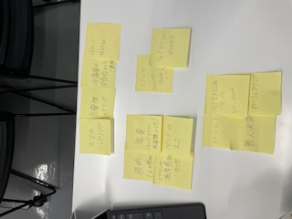
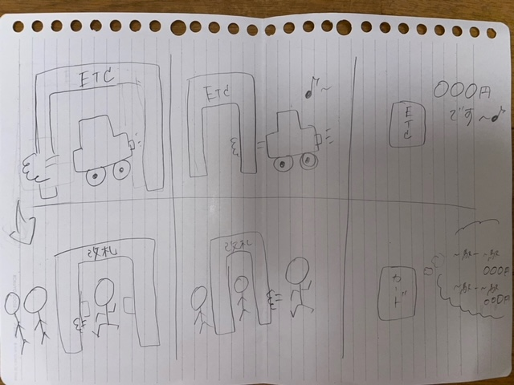

第1回
Iotについて
1.Iotとは??
Iotは、”Internet of
Things"の略で、モノのインターネットと訳される。
今までインターネットに繋がっていなかったモノをつなぐことをIotと呼んでいる。
モノのインターネットでは、モノに対して各種センサーを付けてその状態をインターネットを介してモニターしたり、
インターネットを介しモノをコントロールしたりすることにより、より安全で快適な生活を実現しようとしている。
2.Iotでできること
Iotの技術が使われている例と、Iotを活用したらできそうなものを付箋で出し合いました。

- 家電（テレビ、エアコン、洗濯機、レンジ）
- 照明（ひとの感知）
- ペットのえさ
- スマートロック
- AI音声認識サービス(Siri、Alexa)
- 無人決済
- カーシェアリング
- ICカード(PASUMO、学生証、ルームキー)
- ウェアラブル端末
⇊⇊⇊⇊⇊⇊⇊
- スマホシェアリング
- 充電器シェアリング
- 冷蔵庫の中身を遠隔で見れる
- 改札が顔認証
3.未来のIot
車にETCを付ければ、その場でお金を払ったり、タッチをせずに通り抜けできることを利用して
改札を通るときに、PASUMOをタッチしなくても持っているだけで後で請求されるしくみ。
